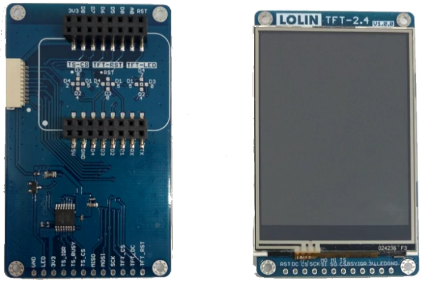
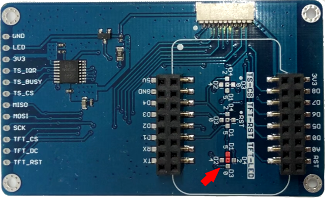
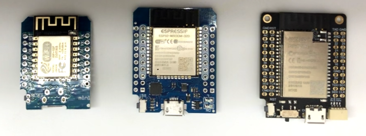

Hasp-lvgl supports the ESP32, ESP8266 and STM32F4 families of microcontrollers. It needs a compatible micro-controller with drivers supporting the attached display, touch controller, storage and network.
Below is a list of recommended development boards and a TFT touchscreen to get you up-and-running in no time.
Recommended Boards#
| Basic | Standard | Pro | Experimental | |
|---|---|---|---|---|
| MCU | ESP8266 | ESP32-WROOM | ESP32-WROVER | STM32F4 |
| CPU Freq. | 80Mhz | 240Mhz | 240Mhz | 168 MHz |
| Ram | 80Kb | 520Kb | 520Kb | 192Kb |
| PSRam | no | no | yes | no |
| Minimal Flash | 4MB | 4MB | 4MB | 512Kb |
| Display | ILI9341 SPI | ILI9341 SPI | ILI9341 SPI | ILI9341 FSMC |
| Touch | XPT2046 SPI | XPT2046 SPI | XPT2046 SPI | XPT2046 SPI |
| Network | Wifi | Wifi | Wifi | Ethernet / Wifi |
| Dev. Board* | D1 mini ESP8266 | D1 mini ESP32 | TTGO T7 v1.4 Mini32 | STM32F407VET/ZGT Black |
| Firmware | Download | Download | Download |
!> * Due to the large number of possible hardware options a selection of 3 popular ESP development boards has been made for the precompiled binaries.
?> Advanced users can build and compile custom configurations using PlatformIO, however this is not currently supported.
Recommended Display#
Lolin TFT 2.4"#

ILI9341 SPI touchscreens with backlight dimming via PWM are quite cheap to get. An ILI9341 TFT display with SPI is required when using a pre-built binary. The touchcontroller needs to be the XPT2046 Resistive Touch driver.
The Lolin TFT 2.4" is plug-and-play with the 3 recommended ESP development boards. If you have another ESP or MCU, you can still use this display using jumper cables. You can also solder a row of headers at the bottom of the display to plug it into a breadboard. Therefor the Lolin TFT 2.4 Touch Shield is used as the development display of choice.
Backlight Control#
To use PWM dimming on the Lolin TFT 2.4" you must solder the TFT-LED pin to either D1, D2 or D4. D1 is recommended for backlight control and configured by default.

Do not use D3 for backlight control because it is already in use for touch!
It is also not recommended to use D4 for backlight control because it is already in use for PSram on the ESP32-Wrover.
Compatible ESP boards#

The Lolin TFT 2.4" header is plug-and-play compatible with these development boards, no need to use any jumper cables:
ESP32: - Wemos D1 Mini ESP32 (only solder the inner row of the pinheaders) - TTGO T7 V1.4 MINI32 ESP32 (only solder the inner row of the pinheaders) - LOLIN D32 Pro V2.0.0 using an additional TFT cable
ESP8266: - Wemos D1 Mini ESP8266 - Lolin D1 Mini Pro ESP8266 V2.0.0
?> If you have a Lolin TFT 2.4" Display and a compatible ESP development board, you have all the hardware that is needed. ?> In that case you can skip ahead to the Firmware Installation.
Alternative SPI Display#
Any common ILI9341 320x240 4-wire SPI touchscreen with XPT2046 Resistive Touch driver can be used, like: - 2.4" SKU: MSP2402 - 2.8" SKU: MSP2807 - 3.2" SKU: MSP3218
You will need to connect the GPIO pins using jumper wires.
Experimental MCUs#
STM32F407xxT Black Combo#
There are several cheap STM32F407xx Black boards available on the market with a TFT display header and accompanying 3.2" ILI9341 FSMC screen (320x240). This hardware is experimental and not fully supported.


Make sure to purchase a compatible screen, preferably from the same vendor.
There are multiple FSMC interfaces: e.g. One is marked TFT, another is marked New-TFT and
a third has no markings.
The pinout of each header & display is different and are not interchangable!
You can however use jumper cables instead, but it won't be plug-and-plug anymore. {: .notice--warning}
The following boards are being tested:
-
STM32F407VET6 Black (v2.1) with 512 KB flash


STM32F407VET6 Black (v2.0 and v2.1) - Purchase Link: AliExpress AliExpress AliExpress (! V2.0 !)
- Documentation can be found on GitHub
-
STM32F407ZGT6 Black (V3.0) with 1 MB flash


STM32F407ZGT6 Black (v3.0) - Purchase Link:
- Documentation can be found on GitHub
?> The STM32F4 boards do not have network connectivity. You can use a compatible network adapter and configure it in PlatformIO.
Images of STM32 boards are CC BY-NC 4.0 from https://stm32-base.org/